Bank-SMS auf dem iPhone automatisch eintragen
Damit die SMS deiner Bank von selbst in deinem Haushaltsbuch landen, legst du in der App „Kurzbefehle“ eine Automation an. Sie läuft, sobald eine Nachricht mit einem Wort aus den SMS deiner Bank eintrifft, und gibt deren Text an die TrackExpenses-Aktion „Bank-SMS importieren“ weiter. Danach wird jeder Kauf von selbst eingetragen, und du prüfst ihn in der App, wann du willst.
Was du brauchst
- Ein iPhone mit iOS 17 oder neuer und Apples App „Kurzbefehle“.
- TrackExpenses auf demselben Gerät.
- Eine Bank, die dir zu jeder Buchung eine SMS schickt.
Die Bilder in dieser Anleitung stammen aus iOS 27. In iOS 26 und älter sehen die Bildschirme anders aus, und einige Schritte weichen ab. Die Schritte für dein System findest du in der App unter „Mehr“ → „Automatischer SMS-Import“.
Wenn deine Bank keine SMS schickt
Viele Banken in Deutschland, Österreich und der Schweiz schicken Mitteilungen in ihrer eigenen App statt SMS. Die kann eine Automation nicht weitergeben. Für Käufe mit Karten aus Wallet gibt es in Kurzbefehle den Auslöser „Transaktion“: Er läuft bei jedem Kauf, und die TrackExpenses-Aktion „Wallet-Transaktion importieren“ trägt ihn ein. Die drei Schritte dazu stehen in der App unter „Mehr“ → „Automatischer SMS-Import“ → „Auch Apple Pay-Käufe importieren“.
Schickt deine Bank zu Apple Pay-Käufen auch eine SMS, dann nimm pro Karte nur einen der beiden Wege. Sonst kommt jeder Kauf zweimal an, und der zweite wird als mögliches Duplikat markiert.
Das Filterwort wählen
Die Automation läuft nur bei Nachrichten, die einen Text enthalten, den du festlegst. Nimm ein Wort, das in jeder SMS deiner Bank steht, bei Käufen wie bei Abhebungen und beim Gehalt, und das in deinen privaten Nachrichten kaum vorkommt. Ein Währungskürzel wie EUR oder CHF passt oft, weil die Bank es zu jedem Betrag schreibt. Sonst eignet sich ein Wort, das deine Bank immer wiederholt, oder ihr Name. „Zahlung“ in den Bildern ist nur ein Beispiel. Leg keinen bestimmten Absender fest, denn Banken wechseln ihren Absendernamen gelegentlich.
Die Einrichtung Schritt für Schritt
Die folgenden 18 Schritte machst du einmal, in ein paar Minuten.
In der Mediathek beginnen
Öffne Kurzbefehle. Geh zurück zur „Mediathek“ und wähle „Automation“.
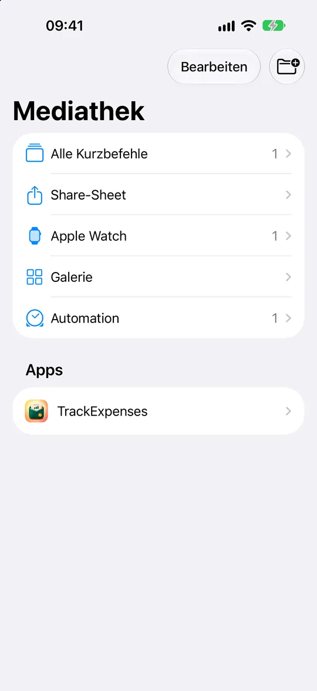
Neuen Kurzbefehl erstellen
Tippe unten auf +. In iOS 27 liegen Automationen in Kurzbefehlen.
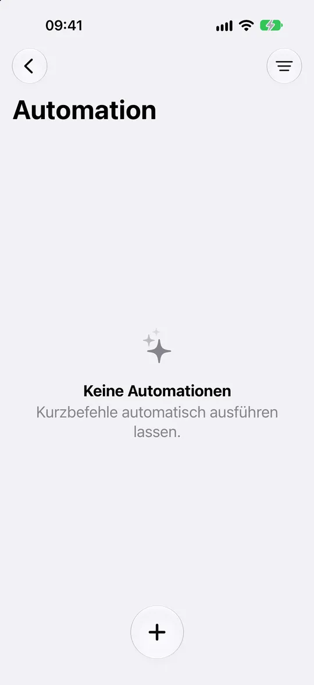
Editor öffnen
Wenn sich „Kurzbefehl beschreiben“ öffnet, tippe auf „Editor“ oder „Bearbeiten“. Tippe dann im Aktionsbereich auf „Automation“.
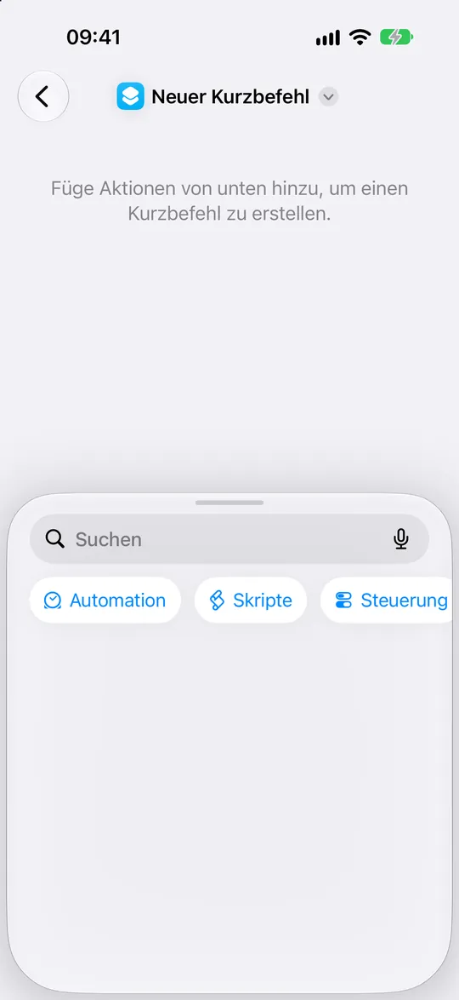
„Nachricht“ wählen
Tippe unter „Kommunikation“ auf „Nachricht“, um den Auslöser für eingehende Nachrichten hinzuzufügen.
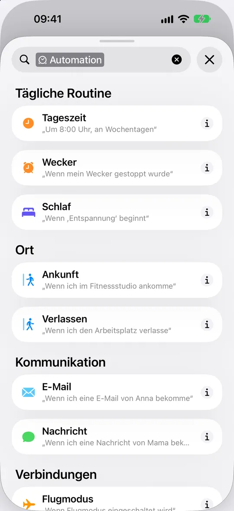
Filterfeld ändern
Tippe auf das erste blaue Feld „Absender:in“. Damit wählst du, welcher Teil der Nachricht verglichen wird.
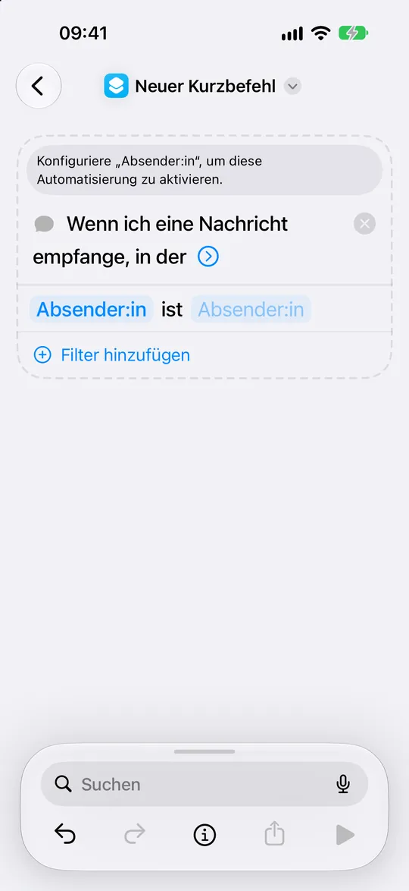
Auf den Nachrichtentext filtern
Wähle im Menü „Nachricht“. Die Bedingung lautet dann „Nachricht enthält Text“.
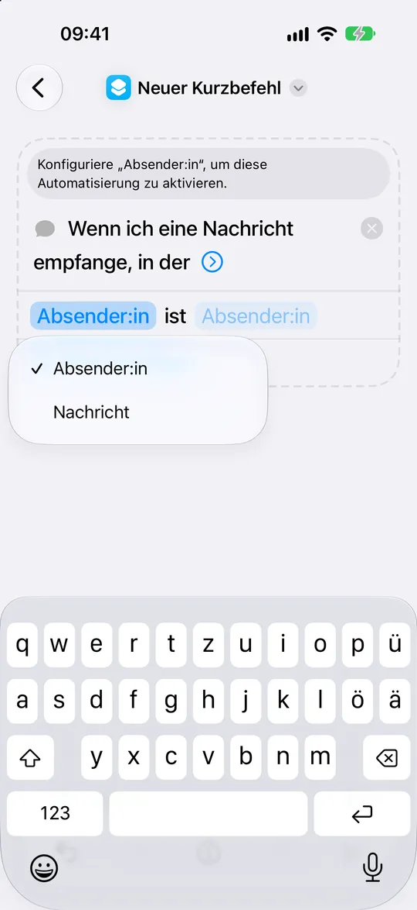
Die Wortwahl deiner Bank verwenden
Tippe auf „Text“ und gib eine Formulierung aus deinen Bank-SMS ein. „Zahlung“ ist nur ein Beispiel. Tippe dann auf den blauen Pfeil des Auslösers.
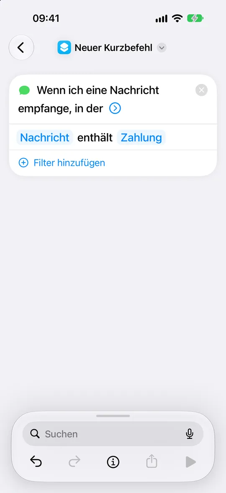
Automatisch ausführen lassen
Lass „Automation“ an und „Vor dem Ausführen bestätigen“ aus. Die beiden ersetzen den älteren Bildschirm „Sofort ausführen“.
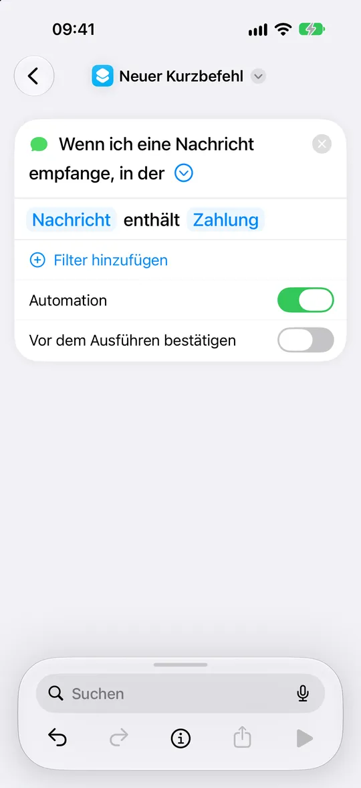
Import-Aktion suchen
Tippe auf „Suchen“, gib „Bank-SMS importieren“ ein und wähle die TrackExpenses-Aktion.
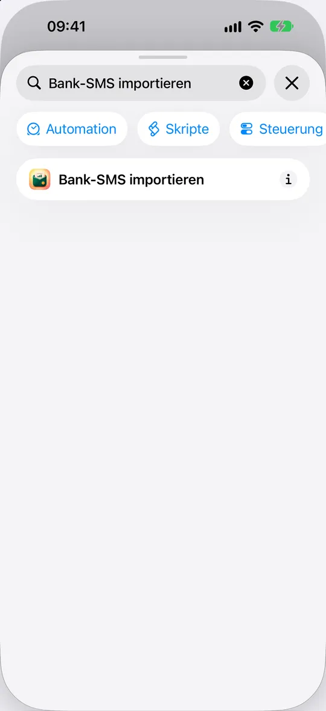
Eingehenden Text verbinden
Tippe in „Buchung aus Nachricht importieren“ auf den blauen Platzhalter „Nachricht“.
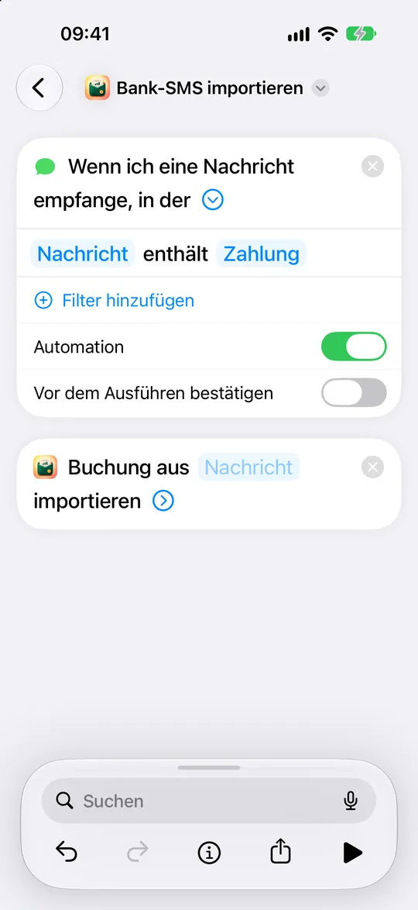
„Variable auswählen“ öffnen
Tippe in der unteren Leiste auf „Variable auswählen“. Tipp keine Nachricht ein und verwende nicht „Jedes Mal fragen“.
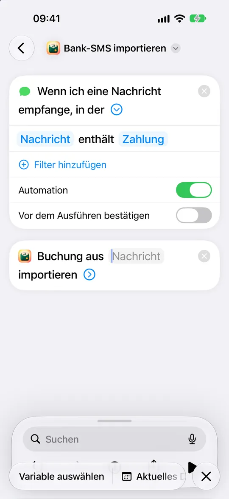
„Nachricht“ des Auslösers wählen
Tippe direkt unter dem Auslöser auf „Nachricht“. In iOS 27 ist das die Ausgabe der eingehenden Nachricht.
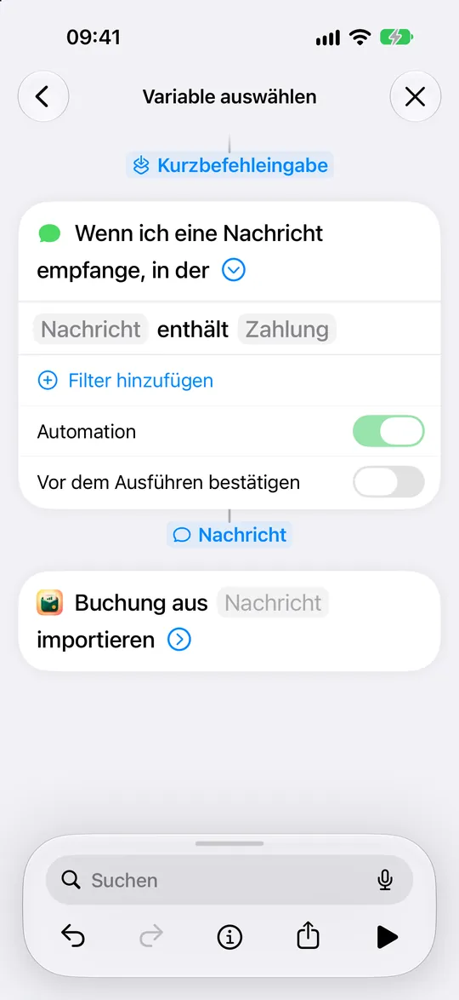
Nachrichtentext verwenden
Schließ die untere Leiste mit ×. Tippe auf die eingefügte Variable „Nachricht“, um ihre Eigenschaften zu sehen.
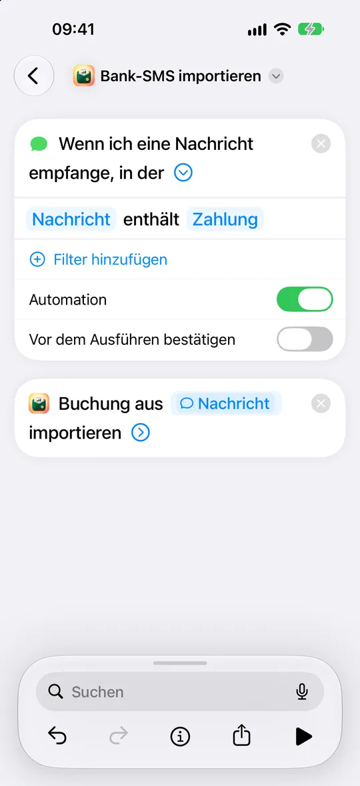
„Inhalt“ wählen
Wähle in der Liste „Laden“ der Variablen „Inhalt“. Tippe auf „Zurück“ und schließ die Variablenleiste mit ×.
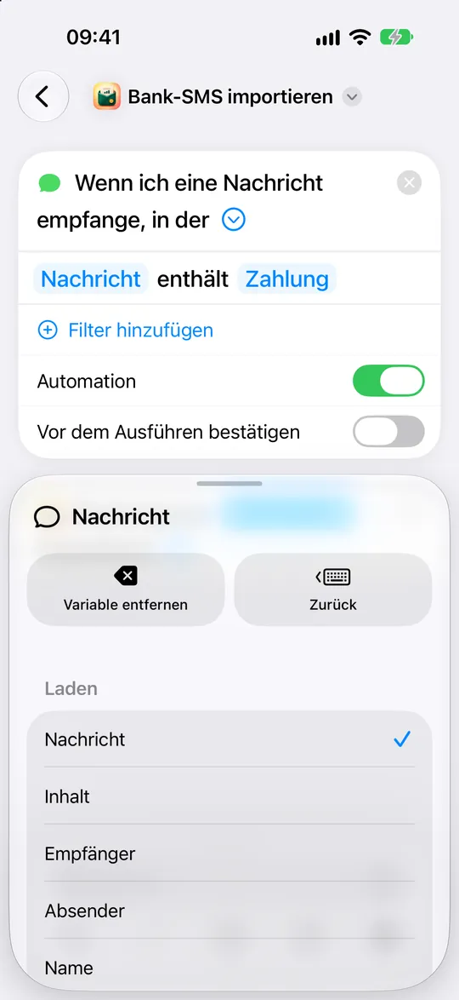
Importe leise halten
Klapp den blauen Pfeil der Import-Aktion auf und schalte „Beim Ausführen anzeigen“ aus. Die verbundene Variable sollte „Inhalt“ heißen.
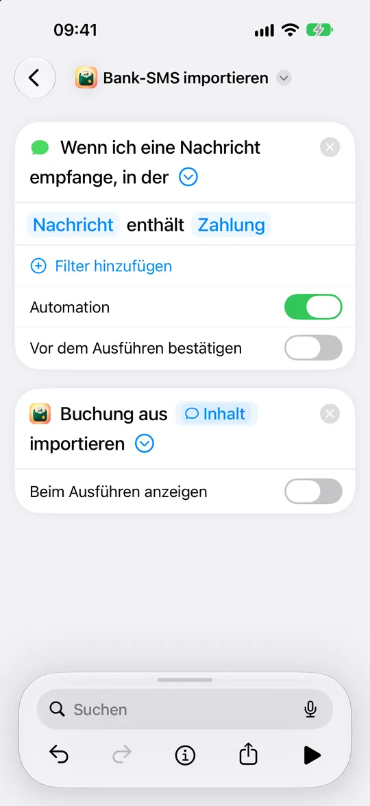
Datenschutz des Kurzbefehls prüfen
Tippe in der Symbolleiste des Editors auf ⓘ und öffne dann „Datenschutz“.
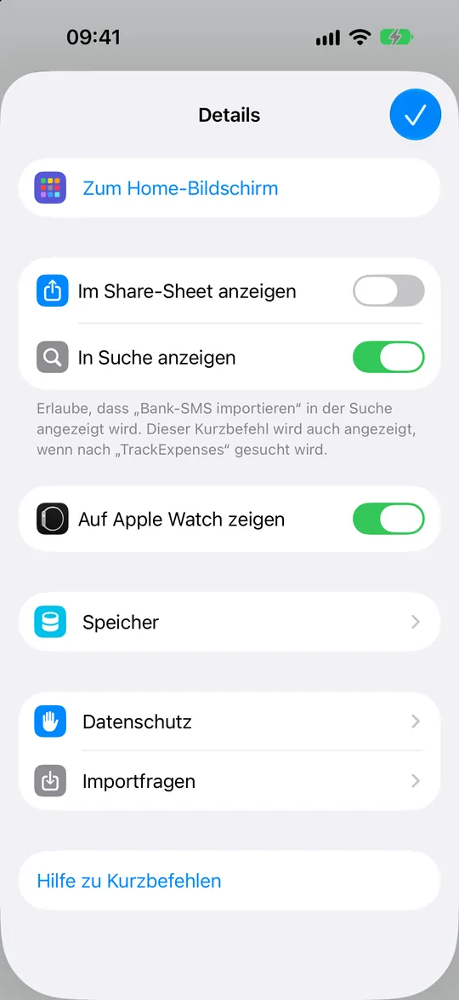
Im Sperrzustand erlauben
Lass „Ausführung im Sperrzustand erlauben“ aktiviert. Geh zurück zu „Details“, tippe auf „Fertig“ und dann auf „Zurück“, um den Kurzbefehl zu sichern.
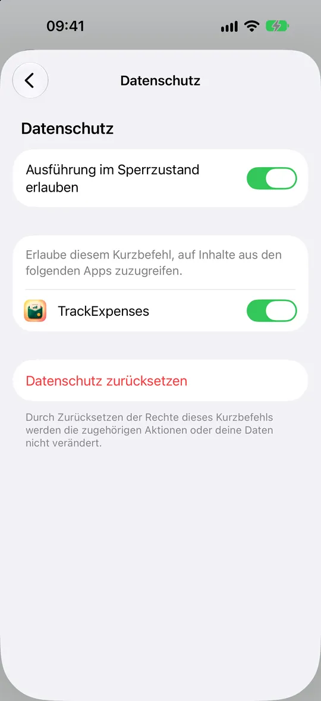
Bereit für deine nächste Bank-SMS
Prüf, ob die Automation aktiviert ist. Sieh dir die nächste passende SMS in TrackExpenses unter „Mehr“ → „Automatischer SMS-Import“ an.
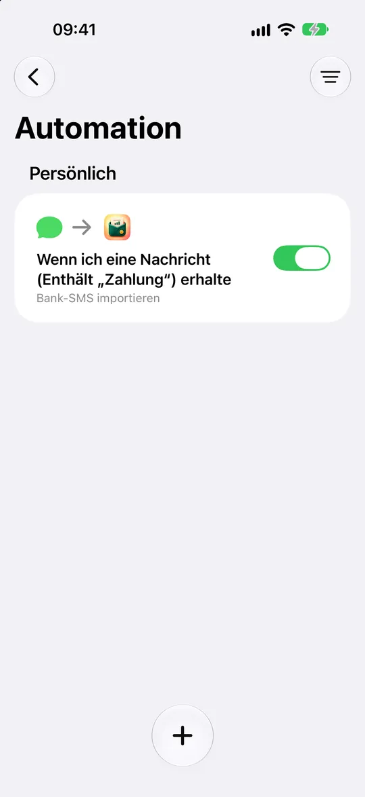
Was danach passiert
Trifft eine passende SMS ein, liest TrackExpenses Betrag, Geschäft, Datum und Karte. Die Buchung kommt auf das Konto, dem du die Karte mit denselben Endziffern zugeordnet hast, und bekommt eine Kategorie aus dem, was die App aus deinen früheren Buchungen gelernt hat. Was du noch prüfen solltest, steht in einer Karte oben in der Tagesliste.
- Abgelehnte Zahlungen und Werbung werden nicht eingetragen.
- Gehalt und andere Geldeingänge werden als Einkommen eingetragen und zum Prüfen markiert. Mit dem Schalter „Geldeingänge importieren“ stellst du das ab.
- Ein Kauf in einer fremden Währung, für die du noch keinen Kurs festgelegt hast, wartet, bis du ihn festlegst. So kommt er nicht zu einem falschen Kurs in deine Summen.
- iOS zeigt bei jedem Lauf der Automation eine eigene Mitteilung. Das ist eine Regel von Apple, die keine App abschalten kann.
10 erfolgreiche Importe pro Kalendermonat und Gerät sind kostenlos. Was danach eintrifft, wird außerhalb deiner Summen aufbewahrt und geht nicht verloren: Pro fügt alles hinzu, sonst gibt das kostenlose Kontingent des nächsten Monats so viele frei, wie es deckt.
Wenn eine SMS nicht eingetragen wurde
- Öffne „Mehr“ → „Automatischer SMS-Import“ und setz die SMS in die Karte „Probier eine SMS deiner Bank aus“ ein. Du siehst sofort, ob sie gelesen wurde, und wenn nicht, warum.
- Prüf, ob die Automation aktiviert ist und „Vor dem Ausführen bestätigen“ aus ist.
- Prüf, ob die Variable in der Import-Aktion die „Nachricht“ des Auslösers ist und „Inhalt“ anzeigt (Schritte 10 bis 15).
- Prüf, ob das Filterwort genau so geschrieben ist, wie deine Bank es schreibt.
Eine SMS, die nicht gelesen wurde, kannst du auch kopieren und in den Buchungen auf „Einsetzen“ tippen. Die Buchung wird dann ausgefüllt, und du prüfst und speicherst sie.
Datenschutz
TrackExpenses liest dein Nachrichten-Postfach nicht: iOS erlaubt das keiner App. Die Automation, die du eingerichtet hast, gibt nur den Text der passenden Nachricht an die App weiter. Der Text wird auf deinem Gerät gelesen. In deinem Haushaltsbuch gespeichert wird, was daraus gelesen wurde (Betrag, Empfänger, Datum), nicht der Text der SMS selbst. Es gibt keine Verbindung zu deiner Bank und kein Konto in der App.
Häufige Fragen
Liest die App alle meine Nachrichten?
Nein. Die App bekommt nur die Nachrichten, die das Wort enthalten, das du in der Automation festgelegt hast. Du richtest sie ein und kannst sie in Kurzbefehle jederzeit ausschalten oder löschen.
Versteht die App Bank-SMS auf Deutsch?
Ja. Sie liest deutsche Formulierungen wie Kartenzahlung, Abbuchung, Lastschrift, Gutschrift und Zahlungseingang, ebenso englische und arabische SMS. Garantieren lässt sich das nicht für jede Bank. Probier deshalb zuerst eine SMS deiner Bank in der App aus.
Wie viele SMS trägt die App kostenlos ein?
10 erfolgreiche Importe pro Kalendermonat und Gerät. Was darüber hinausgeht, wird aufbewahrt und nicht gelöscht: Pro fügt alles hinzu, sonst gibt das kostenlose Kontingent des nächsten Monats so viele frei, wie es deckt.
Mehr dazu
TrackExpenses auf Deutsch: alle Funktionen
Auf Englisch:
- SMS Auto-Import Setup: iOS 27 and 26
- Fix Bank SMS Automation on iPhone
- Track Apple Pay Purchases on iPhone
Dein Geld, leichter im Blick.
Haushaltsbuch: Budget & Coach für iPhone und iPad.
Fakten zur App: was kostenlos ist und was Pro bietet
Haushaltsbuch: Budget & Coach (TrackExpenses) ist eine App von Mohamed Elatabany für iPhone und iPad mit iOS/iPadOS 17 oder neuer, auf Deutsch, Englisch und Arabisch. Ein Konto in der App oder ein Bank-Login ist nicht nötig. Optionale Automationen in der App „Kurzbefehle“ importieren unterstützte Bank-SMS und Wallet-Käufe; die App liest dein Nachrichten-Postfach nicht. Die Spracheingabe erstellt Entwürfe direkt auf dem Gerät, sofern Gerät und Sprache sie unterstützen. Kostenlos sind unbegrenzt viele Buchungen von Hand, Budgets, das Umschichten zwischen Budgets im laufenden Zeitraum und „Ausgleichen“ bei gleichem Gesamtbudget, verbleibende Tage und die Beträge für Ausgegeben und Übrig, Auswertungen, Suche, monatlicher CSV-Export, privater iCloud-Sync, 3 Konten und 2 wiederkehrende Regeln sowie 10 gespeicherte Spracheingaben und 10 erfolgreiche Bank-SMS-Importe pro Kalendermonat und Gerät. Der Finanzcoach liest den letzten Budgetmonat und schlägt ein Limit vor. Was er nach Regeln beantworten kann, dazu Diagramme, Dateien und getippte Einträge, entsteht auf dem Gerät. Offene Fragen gehen erst nach deiner Zustimmung über einen Server des Entwicklers an Claude von Anthropic, zusammen mit dem bisherigen Gespräch, einer Zusammenfassung dieses und des letzten Monats und, wenn das Modell danach fragt, Summen für bis zu 13 Monate oder bis zu 20 Käufe mit Datum, Geschäft, Kategorie und Betrag; niemals Notizen, Belege, Kontonamen oder Kontonummern oder Kontostände (10 Fragen pro Monat und Gerät kostenlos). Bank-SMS über das kostenlose Kontingent hinaus werden aufbewahrt, aber gesperrt und außerhalb der Summen: Pro fügt alle hinzu, sonst gibt das Kontingent des nächsten Kalendermonats so viele frei, wie es deckt. Nichts geht verloren, und gespeicherte Buchungen werden nie gesperrt. Pro ergänzt unbegrenzte Spracheingabe, Bank-SMS-Importe, Konten und wiederkehrende Regeln, Challenges mit dem Finanzcoach und mehr Fragen, einen Gehaltsplan, Prognosen, ein Tagesbudget insgesamt und je Budget, bei dem die Fixkosten zuerst abgezogen werden, Was-wäre-wenn-Pläne, CSV-Import, CSV-Export für beliebige Zeiträume, ein vollständiges JSON-Backup mit Wiederherstellung, Farbdesigns und alternative App-Icons. Es gibt ein Monatsabo, ein Jahresabo und einen einmaligen Kauf (Lebenslang). Berechnungen beruhen auf deinen Einträgen und sind keine Finanzberatung.